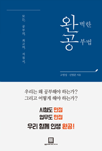

p38
사람은 보고 싶은 것만 본다. 물론 그렇다면 문제해결과는 점점 거리가 멀어지게 될 것이다.
p41
자신을 객관적으로 볼 수 있는 능력이 바로 '메타인지'다.
결국 지식은 스스로 구축해 나갈 때에 자기화가 된다.
많은 하위권 학생들은 학원에서 학습하기보다는 공부한다는 안도감을 느끼려고 학원에 다니는 경우가 많았다.
p50
확증 편향: 자신이 처음 생각했던 주장에 지지하는 근거만을 찾는 경향을 말한다.
p52
이렇게 복합적인 관점에서 끊임없이 문제를 해결하는 것이 회사의 일이다(직급이 높아지면 문제해결뿐만 아니라 문제를 찾아 나서기도 해야 한다).
p54
답을 찾는 것이 중요한 것이 아니라 얼마나 이해했는지 확인하는 것이 연습문제의 가장 주된 목적 중에 하나다. 내가 높은 학점을 받고 우쭐했던 것은 마치 시력 측정표를 외워서 2.0이라는 시력을 받고 좋아한 것과 같다.
연습문제는 아무리 어려워도 답이 있는 문제들이다. 하지만 회사에서 발생하는 문제들은 답이 없는 경우가 허다하다.
p61
그렇다면 장기기억을 위한 최상의 전략에는 무엇이 있을까? 많은 독자가 실망하겠지만 정말 많은 연구가 한결같이 지지하는 기억 전략이 있다. 그것은 시험을 자주 보는 것이다. 이를 시험 효과(testing effect)라고 한다.
p91
이런 식으로 '왜'를 붙여본다면 자신의 궁극적인 관심에 도달할 수 있을 것이다.
p98
첫째, 지금 당신이 하는 일을 '왜' 하는지를 계속 물어보자
p101
목표는 구체적으로, 특히 실제 행동에 대한 내용을 적는다면 실제로 행동할 가능성도 커진다.
p105
먼저 일주일 동안 매시간 자신이 무슨 행동을 하는지 모두 적어라. 더불어 자신이 목표를 위해서 해야 할 일들을 또 적어라. 그리고 이 모든 행동을 4개 부분으로 나눠보라.
p139
공부를 잘하고 싶다면 그 분야의 공부를 하는 수밖에 없다.
공부는 무조건 즐거워야 한다는 말은 공부 자체에 특별한 목적이 없을 때에나 해당하는 일이다. 공부를 통해 시험에 합격해야 한다든가 논문이나 책을 쓰는 등 무슨 이론이나 콘텐츠를 만드는 과정은 무척이나 괴로울 때가 많다. 그것을 극복할 수 있느냐 없느냐가 각 분야의 저문가로 성장할 수 있느냐 없느냐를 가늠한다.
하지만 슈퍼스타가 될 가능성이 큰 최우수그룹 학생들은 18세가 되기까지 무려 평균 7,410시간 이나 투자했다. 특히 최우수 그룹에서 가장 적게 연습한 학생도 양호그룹에서 가장 많이 연습한 학생보다 더 많은 연습 시간을 가진 것으로 나왔다.
독서로 예를 들면 처음에는 책을 읽는 데에 집중하되 독서가 편해졌으면 책에 대한 서평을 쓰고 책 내용에 관해 토론하거나 발표를 해야 성장이 있다는 이야기다.
p141
그런데 이들 사이에 차이가 나는 것이 딱 하나가 있다. 바로 혼자 하는 연습 시간이었다.
p151
자신의 능력보다 조금 더 어려운 작업을 지속해서 해야 한다.
p161
올바른 피드백을 받고 싶다면 그 시작은 자신의 부족함을 부끄러워하지 않고 질문하는 용기를 갖는 것이다. 꾸준히 하는 것은 시간과의 싸움이다. 막연하게 열심히 하는 것이 아니라 시간 확보가 반드시 선행되어야 한다.
개인차는 있겠지만 조금 노력하면 주말에 책 한권 읽는 것은 그렇게 어려운 일은 아니다. 그렇게 일년을 읽으면 50권 이상을 읽을 수 있다. 2년만 읽으면 100권이다. 일반 서적이 아닌 전공서적도 한 분기 1권씩 공부한다면 일 년이면 8권이 된다. 2년간 한 분야를 파고들면 그 분야에 상당한 수준의 내공을 쌓을 수 있다.
p180
심리적 자유감이 말살되는 집단주의와 행복의 최고 변수인 사람에 대한 신뢰를 떨어뜨리는 물질주의적 문화를 가진 한국, 그리ㅗㄱ 그곳에 사는 우리는, 그래서 행복을 찾기 힘든 것이다.
개인의 가치와 감정을 최대한 존중하고 수용하는 문화가 행복을 만든다는 것이다.
p182
집단주의적 문화에서 부족한 점 하나가 '심리적 자유감'이다.
자유감이란 남에게 피해를 주지 않는 선에서 내 인생을 내 마음대로 사는 것이다. 그러나 집단주의적인 문화에서는 내 맘대로 살다간 비판받기 일쑤다.
개인주의와 집단주의는 행복의 수준을 가르는 데 가장 중요한 열쇠다.
p189
어떻게 하면 타인과 더불어 일도 잘하고 잘 살아 갈 수 있을까? 대인관계에서 가장 중요한 덕복 하나를 뽑으라면 바로 '공감능력' 이다.
조언을 구하는 자는 뭘 모르는게 아니다. 뭘 좀 아는 자다.
p267
창의적으로 엄청나게 주목받는 게시물을 만들고 싶다면 내 조언은 다음과 같다. (1) 공부한다 (2) 시도한다 (3) 분석한다 (4) 다시 시도한다 충분한 인내심으로 이 과정을 이겨 낸다면 사람들은 당신에게 이렇게 말할 것이다. "아이디어가 좋았네!"
p275
대학생이나 직장인들이 할 수 있는 가장 간략한 만독 방법을 소개하면 다음과 같다. 먼저 정말 씻어 먹고 싶을 정도로 감명 깊은 책을 선정한다. 그리고 읽는다. 일독한 뒤 재독을 할 때 챕터 별로 요약을 한다. 요약할 때 자기 생각을 덧붙이거나 연관된 다른 자료를 함께 적으며 하나의 글로 만들면 더욱 좋다. 글의 수준에는 너무 신경 쓰지 않아도 된다. 처음에는 다 못한다. 성장형 사고방식! 처음엔 못하는 게 당연하니 있는 대로 글을 만들어 보자. 마지막으로 블로그나 SNS로 자신의 글을 공개해 보자. 공개된 글쓰기를 함녀 집중도가 배가 될 뿐만 아니라 퇴고도 더 잘하게 되고 무엇보다 대중에게 피드백을 받을 수 있으므로 성장에 있어서 최고의 전략이 된다. 이런 과정을 꾸준히 하게 된다면 어느새 하나의 완성된 멋진 글을 쓰는 자기 자신을 만나게 될 것이다.
OECD는 문해력을 이렇게 정의한다. 텍스트를 이해하고, 평가한 뒤 이를 활용할 수 있는 능력이다. 문해력은 단순히 단어와 문장을 해독하는 것을 넘어 복잡한 텍스트를 읽고 그를 해석하고 평가하는 능력까지 모두 아우른다(단, 텍스트의 생산(작문)은 이 능력에 포함되지 않는다)."
p285
대부분 업무가 텍스트로 되어 있다는 것을 상기해 봤을 때, 내용을 제대로 이해하고 추론하고, 비판적으로 바라볼 수 있는 능력의 유모는 생산성과 직결될 가능성이 크다.
또한, 분석 결과 노동생산과 업무상 문해력 활용은 플러스 상관관계를 맺는 것으로 드러났다.
p289
매일 한 시간 이상 2-3달 꾸준히 독서를 하면 습관이 형성되는데 이때부터는 서서히 독서가 삶의 일부분처럼 느껴진다.
p293
습관은 보통 10주를 넘기면 생기기 시작한다.
p356
그런데 만약 실제로 반복연습을 할 수 없다면 어떻게 해야 할까? 몸으로 할 수 없다면 머리로 하면 된다. 머리속으로 실제 상황을 되새기는 시뮬레이션은 우리가 생각하는 것 이상의 긍정적 효과를 가져온다.
p361
연구 결과 탁월한 결정을 하는데 최종 의사결정자의 직관이나 전문가 그룹의 분석보다 '프로세스'가 6배나 더 중요하다는 것이 밝혀졌다. 프로세스는 의사결정을 하기 위한 일종의 과정, 예를들어 최종 의사결정자가 선택하기 전에 반대 의견을 꼭 수렴해야 하는 제도가 있다는 것 등을 말한다.
p365
고 작가의 글쓰기 능력은 어떨까? 고 작가는 작가로 데뷔하기 전에도 매일 하루에 한 편에 가까운 글을 썼으며 데뷔 이후에는 평균적으로 약 350페이지 정도 되는 책을 1년에 한 권씩 출간했다.
'한 번만 더, 한 번만 더!' 라고 외치며 지겨움을 이겨 내고 반복연습을 할 때 다신은 '한 걸음 더, 한 걸음 더!' 성장하는 자신을 발견할 것이다.